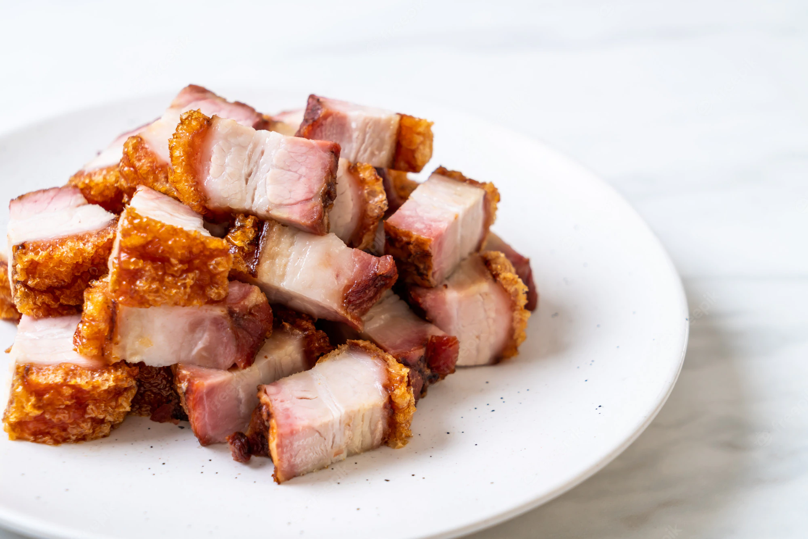

Crispy Pork Belly

Description
Crispy pork belly is one of the most delicious things to eat! When slow-roasted, this piece of meat melts in your mouth like butter and has the best crackling in the world!
Ingredients
- 3 pounds pork belly, skin-on
- Chinese five-spice
- salt
Equipment
- Baking sheet with a wire rack
- Probe thermometer
Directions
- Preheat the oven to 250°F.
- Season the flesh side of the pork belly with salt and Chinese five-spice.
- Flip the pork belly and season the skin side with salt.
- Place the pork belly skin side up on a baking sheet with a wire rack.
- Roast the pork belly until it reaches an internal temperature of 200°F.
- Once the internal temperature reaches 200°F, turn on the broiler setting and roast the pork belly until the skin is crispy.
- Take the pork belly out and allow it to rest for at least 30 minutes.
- Once rested, slice, serve, and enjoy!